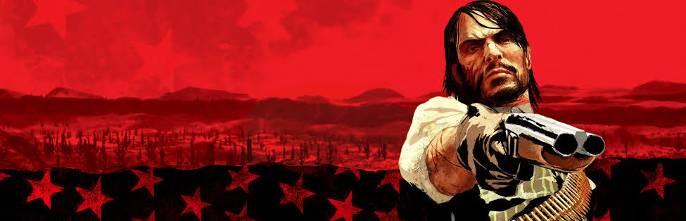
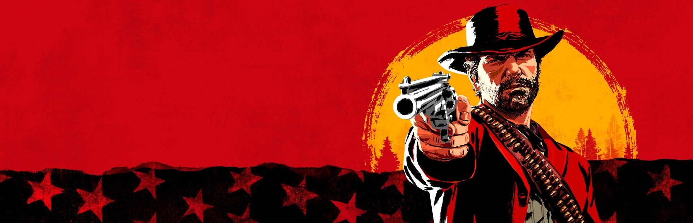

ამბავი, ერთგულება, გამოსყიდვა
"ის, სადაც ყოველი არჩევანი ითვლება"
Red Dead Redemption ჩვეულებრივი თამაში არ არის. ეს ამბავია — ისეთი, რომელსაც თამაშის დამთავრების შემდეგაც ვერ ივიწყებ. ეს გვერდი შეიქმნა იმისთვის, რომ ქართულად ვისაუბროთ მასზე.

ჯონ მარსტონს ერთი სურვილი აქვს — ოჯახთან დაბრუნება და წარსულის დავიწყება. მაგრამ წარსული ადვილად არ ივიწყებს. ამბავი 1911 წლის ამერიკაში ვითარდება, სადაც "ველური დასავლეთი" ნელ-ნელა ბოლოვდება და მასთან ერთად — ძველი სამყაროც.
მთავარი კითხვა, რომელსაც თამაში სვამს: შეიძლება ადამიანმა მართლა შეიცვალოს — თუ წარსული ყოველთვის გვიბრუნდება?

ეს პირველი ნაწილის წინამდებარე ამბავია — 1899 წელი, იგივე სამყარო, სხვა ადამიანი. არტური მორგანი ბანდაში ცხოვრობს, რომელიც დიდი ხნის წინ მისი ოჯახი გახდა. ყველაფერი ნაცნობი და სტაბილურია — სანამ არ შეიცვლება.
ეს თამაში ეკითხება: ვინ ხარ შენ, როცა ყველაფერი ირყევა? ბევრი ადამიანი ამბობს, რომ RDR2 ერთ-ერთი საუკეთესო ამბავია, რაც კი ოდესმე ვიდეო თამაშში მოუყვანიათ. ჩვენც ვეთანხმებით.
საქართველოში ვიდეო თამაშები ხშირად აღიქმება მხოლოდ დროის ტყუილად გაფლანგვად. ამ ყველაფერში ძნელი წარმოსადგენია, რომ გარკვეული თამაშები ატარებს ისეთ ადამიანურ სიღრმეს, როგორსაც კარგი წიგნი ან ფილმი ატარებს.
Red Dead Redemption-ის მსგავსი სერიები მთელ მსოფლიოში ათასობით ადამიანს ახლებური კუთხით ასწავლიან ერთგულებაზე, პასუხისმგებლობასა და პატიებაზე ფიქრს. თუმცა ქართულ ენაზე ამ თამაშების შესახებ ინფორმაცია პრაქტიკულად არ არსებობს. ბევრი ახალგაზრდა ქართველი ვერ ეცნობა ამ გამოცდილებას ენობრივი ბარიერის ან ინფორმაციის ნაკლებობის გამო.
ეს ვებგვერდი შეიქმნა ამ სიცარიელის შესავსებად.
ადამიანი, ვინც Red Dead Redemption-ს ეცნობა, ეძებს არა მხოლოდ გართობას — ეძებს ამბავს, ეძებს ემოციას. ამ თამაშების მიმართ ინტერესი სწორედ ამ მოთხოვნიდან მოდის: ადამიანების სურვილიდან, გამოიარონ სხვის ცხოვრება და გაიაზრონ სხვის არჩევანი.
ვიდეო თამაში, ისევე როგორც ლიტერატურა, შეიძლება გახდეს სარკე. Red Dead Redemption ეკითხება: ვინ ხარ, ვის ეკუთვნი, და რა ღირს შენი სიტყვა?
ეს ვებგვერდი ხიდია ქართულ მკითხველსა და ამ გამოცდილებას შორის.
ამ ვებგვერდის მიზანია ქართველ მკითხველს გააცნოს Red Dead Redemption სერია, პირველ რიგში, მისი ნარატიული სიღრმის კუთხით.